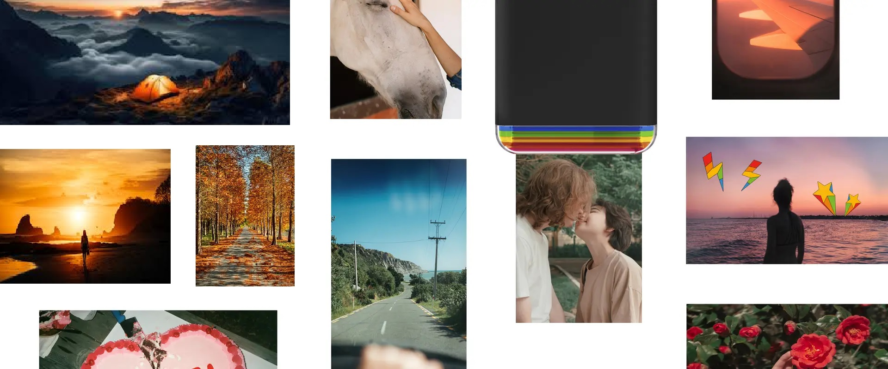
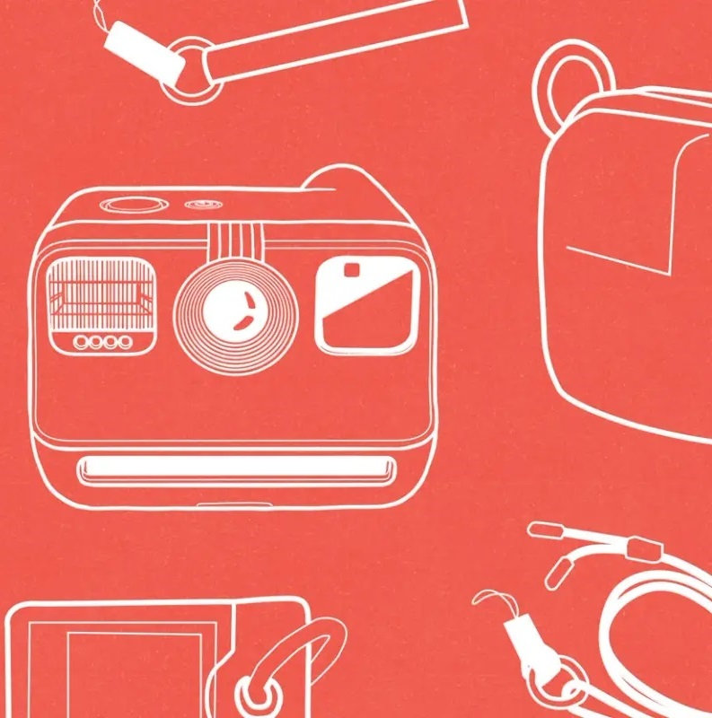
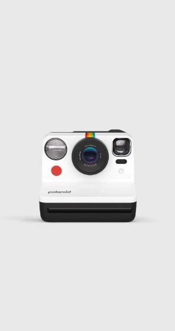
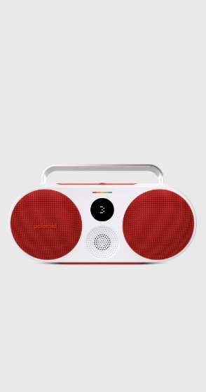
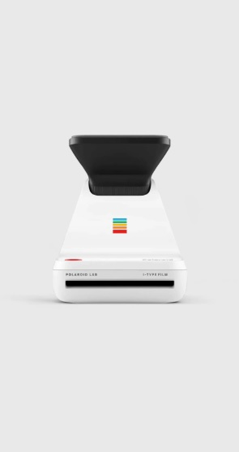
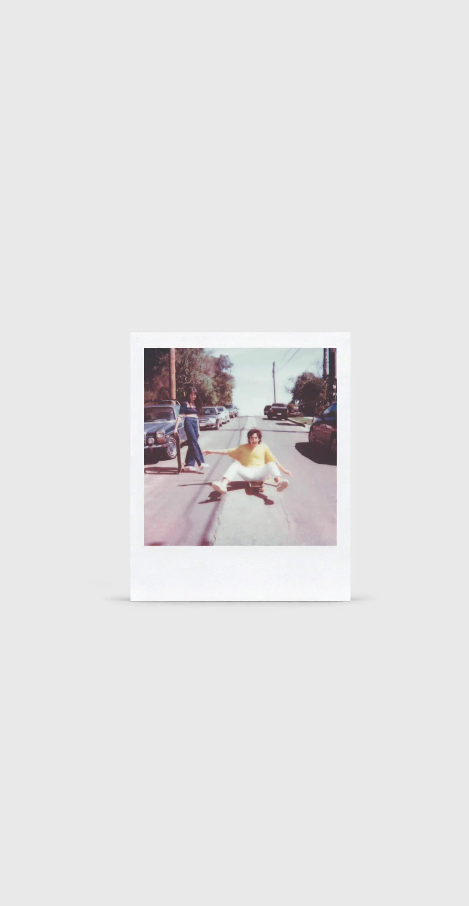
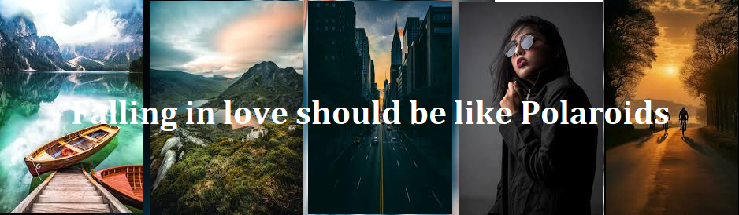

Polaroids capture moments with a unique charm, offering instant, tangible memories. Their vintage aesthetic and soft, nostalgic hues evoke a sense of timelessness. Each photo is a one-of-a-kind keepsake, often imperfect but always authentic, making them a beautiful way to preserve life's fleeting moments. 📸✨





Find it.
whispers like a gentle breeze through forgotten corners of memory. It's a quest to capture fleeting fragments of joy and sorrow, etched in sepia tones of nostalgia. Each click of the shutter echoes with the weight of cherished stories, frozen in time's embrace. In a world racing forward, it beckons a pause, a breath held in anticipation of a captured instant – a lover's smile, a sunset's blaze, a child's laughter. "Find your polaroid" evokes a symphony of emotions, where each photograph is a verse in the poetry of existence, fleeting yet forever imprinted.

Print it.
Print your polaroid, cradle the captured moments in your palms like fragile whispers of time. Each image, a portal to a symphony of emotions, where smiles dance in sepia hues and eyes reflect stories untold. In the quiet of your room, let nostalgia unfurl like petals of forgotten flowers, each frame a testament to love's fleeting embrace or a sunset's whispered farewell. Feel the texture of memory beneath your fingertips, where imperfections are cherished as echoes of authenticity.
We’re here to help.
Get in touch with our customer service team.
E-mail:blabla@gmail.com
Call:8050915660
help line:6841786514